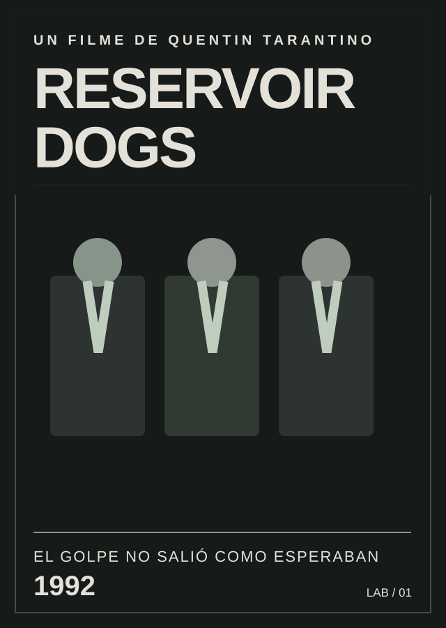

1992 · CINE DE TARANTINO
Reservoir Dogs
Después de un robo fallido, un grupo de delincuentes empieza a sospechar que uno de ellos es un informante. Su primera película como director juega con el tiempo y la desconfianza.
Conocer la película ↗